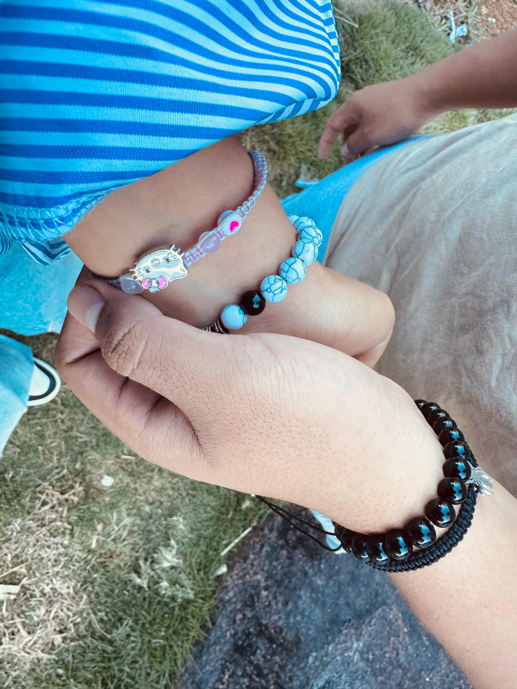

21 de abril — 21 de julio
3
meses
juntos
Gianni & Maricielo
G&M
Toca el sobre para abrir la carta
21 de abril — 21 de julio
Gianni & Maricielo
Toca el sobre para abrir la carta
21 de julio, 2026
Mi Polola,

Hoy se cumplen tres meses desde que decidimos caminar juntos, y quiero que sepas todo lo que has significado para mí en este tiempo tan corto pero tan intenso. Han sido apenas noventa días, pero contigo el tiempo se siente distinto: cada mensaje, cada risa compartida, cada abrazo fuerte y cada momento a tu lado se ha ido guardando en un lugar muy especial dentro de mí. Aprendí que no hace falta que pase mucho tiempo para que alguien se vuelva imprescindible, solo hizo falta que fueras tú.
Han sido apenas noventa días, pero contigo el tiempo se siente distinto: cada mensaje, cada risa compartida, cada silencio cómodo a tu lado se ha ido guardando en un lugar special dentro de mí.
Gracias por tu paciencia, por tu forma de ver la vida, por elegirme cada día, así como yo te elijo a ti. Ten por seguro que mi corazón está completamente lleno de amor por ti y que mis acciones siempre buscarán cuidarte, protegerte y hacerte la mujer más feliz del mundo siempre.
Sé que esto recién comienza, y aunque no puedo prometerte que todo será perfecto, sí te prometo que voy a poner siempre lo mejor de mí para que sigamos construyendo este futuro hermoso que planeamos juntos. Eres mi reina, mi absoluta prioridad y el lugar donde siempre quiero estar.
Feliz tres meses mi amor. Que este día sea hermoso para los dos y recuerda siempre que te amo con todas mis fuerzas hoy y siempre. Que sean muchísimos meses más caminando juntos de la mano.
Con todo mi cariño,
Gianni